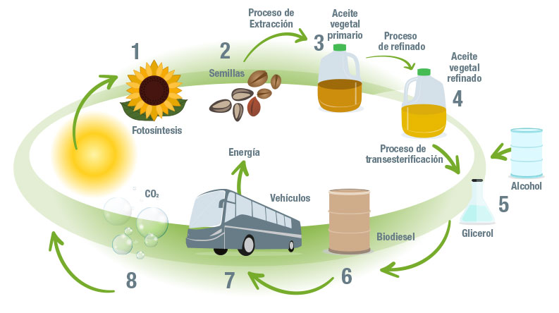
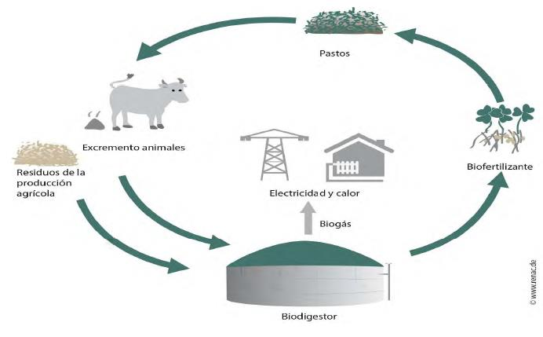
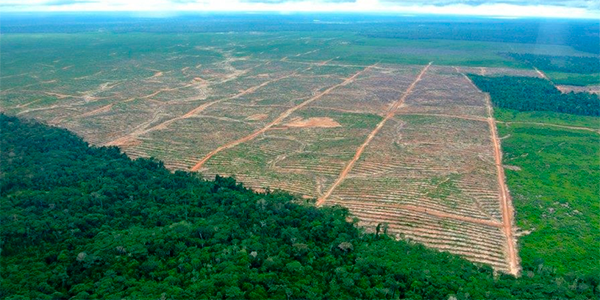

Un modelo de desarrollo sostenible
En el marco de modelos sostenibles y calidad de vida, cabe destacar la importancia de la implementación de los biocombustibles, como fuente de energía en Colombia; en lugar de la utilización de los combustibles fósiles.
El ser humano, como todo ser vivo, depende del entorno para obtener energía. Previo al desarrollo industrial, el hombre utilizaba los animales, los vegetales, la fuerza del viento y del agua para obtener la energía necesaria para sus funciones vitales, para producir calor, luz y transporte. Luego, el hombre pasó a utilizar fuentes de energía almacenada en recursos fósiles, primero fue el carbón y posteriormente el petróleo y el gas natural. Actualmente, los combustibles fósiles y la energía nuclear proporcionan cada año alrededor del 90% de la energía que se utiliza en el mundo. Pero las reservas de combustibles fósiles son limitadas y, en mayor o menor grado, son contaminantes. Desde mediados del siglo XX, con el crecimiento de la población, la extensión de la producción industrial y el uso masivo de tecnologías, comenzó a crecer la preocupación por el agotamiento de las reservas de petróleo y el deterioro ambiental. Desde entonces, se impulsó el desarrollo de energías alternativas basadas en recursos naturales renovables y menos contaminantes, como la luz solar, las mareas, el agua, y la bioenergía proveniente de los biocombustibles [1].
Los biocombustibles son recursos energéticos procesados por el ser humano a partir de materias producidas recientemente por seres vivos, a las cuales se les denomina “biomasa”. El término biomasa, en el sentido amplio, se refiere a cualquier tipo de materia orgánica que haya tenido su origen inmediato en el proceso biológico de organismos recientemente vivos, como plantas, o sus deshechos metabólicos (el estiércol); el concepto de biomasa comprende productos tanto de origen vegetal como de origen animal. En la actualidad se ha aceptado este término para denominar al grupo de productos energéticos y materias primas de tipo renovable que se origina a partir de la materia prima orgánica formada por vía biológica. En lo que tiene que ver con la extracción del biocombustible, se pueden utilizar diferentes métodos para obtener biocombustibles: procesos mecánicos (astillado, trituración, compactación), termoquímicos (combustión, pirolisis y gasificación), biotecnológicos (micro bacterianos o enzimáticos) y extractivos [2].
[1][2]. Biotecnología. Los Biocombustibles.
http://porquebiotecnologia.com.ar/index.php?action=cuaderno&opt=5&tipo=1¬e=58
Consultado el 29 de septiembre de 2016.
Los biocombustibles son a menudo mezclados con otros combustibles en pequeñas proporciones, 5 o 10%, proporcionando una reducción útil pero limitada de gases de efecto invernadero. En Europa y Estados Unidos, se ha implantado una legislación que exige a los proveedores mezclar biocombustibles hasta unos niveles determinados. Esta legislación ha sido copiada luego por muchos otros países que creen que estos combustibles ayudarán al mejoramiento del planeta a través de la reducción de gases que producen el denominado ‘Efecto Invernadero [3].
El biocombustible, principalmente es utilizado en aquellos motores  conocidos como de combustión interna. Cabe destacarse que estos motores se caracterizan por lograr la energía mecánica de la energía química, que le provee un combustible que explota dentro de la cámara de combustión correspondiente [4]. Quedan por tanto fuera de este concepto los combustibles fósiles o los productos orgánicos derivados de ellos, aunque también tuvieron su origen biológico en épocas remotas.
conocidos como de combustión interna. Cabe destacarse que estos motores se caracterizan por lograr la energía mecánica de la energía química, que le provee un combustible que explota dentro de la cámara de combustión correspondiente [4]. Quedan por tanto fuera de este concepto los combustibles fósiles o los productos orgánicos derivados de ellos, aunque también tuvieron su origen biológico en épocas remotas.
Las diferencias entre la energía que se pretende extraer hoy de la agricultura y la contenida en la energía fósil (petróleo, gas natural y carbón) que representa el 80% de la energía consumida en el mundo; la primera se obtiene como resultado de la fotosíntesis: el sol, el agua y los nutrientes que a cada año se adquieren con las cosechas, aunque la energía fósil tiene el mismo origen pero con la diferencia de que es resultado del ahorro de la fotosíntesis producida a lo largo de millones de años. Actualmente se pretende sustituir todo el consumo de energía fósil (petróleo, gas natural y carbón) utilizando los biocombustibles, y que posee un conjunto de particularidades tales como: a) altísimo consumo de energía fósil, b) necesidad de utilizar grandes establecimientos agropecuarios y concentración de tierras c) uso intensivo de tecnologías y máquinas, d) daños ambientales en gran escala, e) alta concentración de capitales.
Dentro de los biocombustibles más usados están: bioetanol, biodiesel y el biogás, a continuación se mencionaran las principales características de cada uno:
El bioetanol, también llamado etanol de biomasa, por fermentación alcohólica de azúcares de diversas plantas como la caña de azúcar, remolacha o cereales. En 2006, Estados Unidos fue el principal productor de bioetanol (36% de la producción mundial), Brasil representa el 33,3%, China el 7,5%, la India el 3,7%, Francia el 1,9% y Alemania el 1,5%. La producción total de 2006 alcanzó 55 mil millones de litros [5].
[3]. Biodisol. Los Biocombustibles.
http://www.biodisol.com/que-son-los-biocombustibles-historia-produccion-noticias-y-articulos-biodiesel-energias-renovables/
Consultado el 29 de septiembre de 2016.
[4]. Definición ABC. Definición de biocombustible.
http://www.definicionabc.com/medio-ambiente/biocombustible.php
Consultado el 29 de septiembre de 2016.
[5]. Wikipedia. Biocarburante.
https://es.wikipedia.org/wiki/Biocarburante
Consultado el 29 de septiembre de 2016.
En lo que tiene que ver con su historia, 'Ya en el año 1908, cuando Henry Ford diseño su primer automóvil, él mismo promovía el empleo de etanol combustible, fabricado a partir de fuentes renovables. De hecho, en la década de 1920 se comercializó en Estados Unidos un 25% de etanol en la gasolina pero los altos precios del maíz, combinados con dificultades en el almacenamiento y transporte, hicieron concluir el proyecto. En la década de 1930 Henry Ford y varios expertos unieron fuerzas y se construyó una planta de fermentación para fabricar etanol a partir de maíz para combustible de motores, al que llamaron "gasohol". Pero en la década de 1940, los bajos precios del petróleo llevaron al cierre de la planta de producción de etanol, y el gasohol fue reemplazado por el petróleo. En la actualidad, el reemplazo del petróleo por fuentes de energía renovables y más limpias vuelve a cobrar impulso, y el bioetanol se presenta como una alternativa atractiva.' [6]. Se puede decir que Colombia es un país estratégico para la producción de este combustible ecológico, ya que según la FAO, Colombia además de estar entre los principales países en producción de caña de azúcar, posee la mayor tasa de rendimiento (85,96 ton/ha).
Otro de los principales biocombustibles (biocarburantes) es el biodiesel, 'Biocombustible más común en Europa. Éste es un biocombustible líquido compuesto de alquil-ésteres de alcoholes de cadena corta como el etanol y metanol, con ácidos grasos de cadena larga obtenidos a partir de biomasa renovable: aceites vegetales, grasas animales o aceite de microalgas. Sus principales materias primas incluyen aceites vegetales como: soya, jatropha, semilla de colza, mahua, mostaza, lino, girasol, aceite de palma, cáñamo, algas, entre otras. El biodiésel puro (B100) es el combustible diésel de menor emisión.
El biodiésel puede ser usado en cualquier motor de diésel cuando es mezclado con diésel mineral. En algunos países, las compañías manufactureras construyen sus motores de diésel bajo la garantía de que puedan utilizar el B100. En muchos países Europeos, un 5% de la mezcla de biodiésel es ampliamente usada y está disponible en miles de estaciones de gas.
Además, éste es un combustible oxigenado, es decir, que éste contiene una cantidad reducida de carbono y un contenido alto de hidrógeno y oxígeno más que el diésel fósil. Esto mejora la combustión del biodiésel y reduce las partículas de emisión del carbono no quemado. También el biodiésel es seguro de manejar y trasportar, ya que es tan biodegradable como el azúcar, un décimo de tóxico como la sal de mesa, y posee un punto de inflamación del alrededor de 148 ºC (300 ºF) en comparación con el petróleo a base de diésel, el cual contiene un punto de inflamación de 125 ºC (52 ºC).' [7].
[6]. Biotecnología. Los Biocombustibles.
http://porquebiotecnologia.com.ar/index.php?action=cuaderno&opt=5&tipo=1¬e=58
Consultado el 29 de septiembre de 2016.
[7]. Wikipedia. Biocarburante.
https://es.wikipedia.org/wiki/Biocarburante
Consultado el 29 de septiembre de 2016.
Su utilización produce enormes ventajas frente a los combustibles no ecológicos: 'No contiene azufre y, por ende, no genera emanaciones de este elemento, las cuales son responsables de las lluvias ácidas. Mejor combustión, que reduce el humo visible en el arranque en un 30%.Reduce las emanaciones de CO2, CO, partículas e hidrocarburos aromáticos. Los derrames de este combustible en las aguas de ríos y mares resultan menos contaminantes y letales para la flora y fauna marina que los combustibles fósiles. Volcados al medio ambiente se degradan más rápidamente que los petrocombustibles. Su combustión genera menos elementos nocivos que los combustibles tradicionales. Es menos irritante para la piel humana Actúa como lubricante de los motores prolongando su vida útil. Su transporte y almacenamiento resulta más seguro que el de los petroderivados ya que posee un punto de ignición más elevado. El biodiesel puro posee un punto de ignición de 148°C contra los escasos 51°C del gasoil.' [8].
Según estadísticas, 'Colombia ha centrado su producción de etanol y biodiesel en los insumos agrícolas con la más alta eficiencia energética del mercado: caña de azúcar y palma de aceite.
Principal productor de palma de aceite en Latinoamérica y quinto en el mundo con más de 1.272.000 toneladas.
La oferta local aun no suple la demanda interna de etanol y biodiesel. Para el 2020 se espera que el mercado interno demande 1.400 millones de litros de etanol y 1.200 de biodiesel anualmente.' [9].
Entre los 3 biocombustibles más reconocidos se encuentra el biogás:
'Casi tres mil millones de personas en el mundo emplean todavía la leña como fuente de energía para calentar agua y cocinar, lo que provoca, entre otros efectos, la pérdida de millones de hectáreas de bosques tropicales y zonas arboladas.
En respuesta a esta situación surgen otras alternativas para obtener energía, entre ellas, la producción de biogás a partir de la fermentación de la materia orgánica. Para la obtención de biogás se puede utilizar como materia prima la excreta animal, la cachaza de la caña de azúcar, los residuales de mataderos, destilerías y fábricas de levadura, la pulpa y la cáscara del café, así como la materia seca vegetal.
Esta técnica permite resolver parcialmente la demanda de energía en zonas rurales, reduce la deforestación debida a la tala de árboles para leña, permite reciclar los desechos de la actividad agropecuaria y, es un recurso energético “limpio” y renovable.
El biogás que se desprende de los tanques o digestores es rico en metano que puede ser empleado para generar energía eléctrica o mecánica mediante su combustión, sea en plantas industriales o para uso doméstico' [10].
[8][10]. Biotecnología. Los Biocombustibles.
http://porquebiotecnologia.com.ar/index.php?action=cuaderno&opt=5&tipo=1¬e=58
Consultado el 29 de septiembre de 2016.
[9]. Procolombia. Inversión en Sector de Biocombustibles en Colombia.
http://inviertaencolombia.com.co/sectores/agroindustria/biocombustibles.html
Consultado el 29 de septiembre de 2016.
En general, el uso de biocombustibles podría beneficiar la realidad energética mundial con una significativa repercusión en el medio ambiente y en la sociedad, contando con las siguientes ventajas:
'a. El uso de biocombustibles como fuente de energía renovable puede contribuir a reducir el consumo de combustibles fósiles, responsables de la generación de emisiones de gases efecto invernadero.
b. Son una alternativa viable al agotamiento ya sensible de energías fósiles, como el gas y el petróleo, donde ya se observa incremento en sus precios.
c. Se producen a partir de cultivos agrícolas, que son fuentes renovables de energía.
d. Pueden obtenerse a partir de cultivos propios de una región, permitiendo la producción local del biocombustible.
e. Permiten disponer de combustible independientemente de las políticas de importación y fluctuaciones en el precio del petróleo.
f. Producen menos emisiones nocivas para los seres vivos, el agua y el aire.' [11].
Aunque también tienen algunas desventajas como:
'la utilización de cultivos de vegetales comestibles (sirva como ejemplo el maíz o la caña de azúcar); o el cambio de uso de tierras dedicadas a la alimentación al cultivo de vegetales destinados a producir biocombustibles, provocando en otras ocasiones la deforestación o desecación de terrenos vírgenes o selváticos, ya que al subir los precios se financia la tala de bosques nativos.
Es necesario además tener en cuenta en la contabilidad de los inputs indirectos de energía, tal es el caso de la energía incorporada en el agua dulce empleada. La importancia de estos inputs depende de cada proceso, en el caso del biodiésel, por ejemplo, se estima un consumo de 20 kilogramos de agua por cada kilogramo de combustible: dependiendo del contexto industrial la energía incorporada en el agua podría ser superior a la del combustible obtenido.
Tanto en el balance de emisiones como en el balance de energía útil si la materia prima empleada procede de residuos, estos combustibles colaboran al reciclaje. Pero es necesario considerar si la producción de combustibles es el mejor uso posible para un residuo concreto. Si la materia prima empleada procede de cultivos, hay que considerar si éste es el mejor uso posible del suelo frente a otras alternativas (cultivos alimentarios, reforestación, etc.). Esta consideración depende sobre manera de las circunstancias concretas de cada territorio.' [12].
[11]. Biotecnología. Los Biocombustibles.
http://porquebiotecnologia.com.ar/index.php?action=cuaderno&opt=5&tipo=1¬e=58
Consultado el 29 de septiembre de 2016.
[12]. Wikipedia. Biocarburante.
https://es.wikipedia.org/wiki/Biocarburante
Consultado el 29 de septiembre de 2016.
Impacto en el medio ambiente debido a los biocombustibles
En la actualidad para la producción de biocombustibles se ha podido constatar que si bien puede ser una ayuda al hacer menos contaminante el uso de combustibles, también lleva a que se genere un desequilibrio natural. Para hacer factible y rentable la elaboración de biocombustibles las industrias buscan terrenos amplios donde poder incrementar plantaciones necesarias para ello, lo que ha traído problemas biológicos que están generando un cambio en la biodiversidad de flora y fauna en los diferentes países.
Las consecuencias que podrían llegar a traer su uso intensivo, se pueden dividir en dos:
Consecuencias sobre el medio ambiente: 'El uso de biocarburantes tiene impactos ambientales negativos y positivos. Los impactos negativos hacen que, a pesar de ser una energía renovable, no sea considerado por muchos expertos como una energía no contaminante y, en consecuencia, tampoco una energía verde. Una de las causas es que, pese a que en las primeras producciones de biocarburantes solo se utilizaban los restos de otras actividades agrícolas, con su generalización y fomento en los países desarrollados, muchos países subdesarrollados, especialmente del sureste asiático, están destruyendo sus espacios naturales, incluyendo selvas y bosques, para crear plantaciones para biocarburantes. La consecuencia de esto es justo la contraria de lo que se desea conseguir con los biocarburantes: los bosques y selvas limpian más el aire de lo que lo hacen los cultivos que se ponen en su lugar.
Algunas fuentes afirman que el balance neto de emisiones de dióxido de carbono por el uso de biocarburantes es nulo debido a que la planta, mediante fotosíntesis, captura durante su crecimiento el CO2 que será emitido en la combustión del biocarburante. Sin embargo, muchas operaciones realizadas para la producción de biocarburantes, como el uso de maquinaria agrícola, la fertilización o el transporte de productos y materias primas, actualmente utilizan combustibles fósiles y, en consecuencia, el balance neto de emisiones de dióxido de carbono es positivo.
Otras de las causas del impacto ambiental son las debidas a la utilización de fertilizantes y agua necesarios para los cultivos; el transporte de la biomasa; el procesado del combustible y la distribución del biocarburante hasta el consumidor. Varios tipos de fertilizantes tienden a degradar los suelos al acidificarlos. El consumo de agua para el cultivo supone disminuir los volúmenes de las reservas y los caudales de los cauces de agua dulce.
Algunos procesos de producción de biocarburante son más eficientes que otros en cuanto al consumo de recursos y a la contaminación ambiental. Por ejemplo, el cultivo de la caña de azúcar requiere el uso de menos fertilizantes que el cultivo del maíz, por lo que el ciclo de vida del bioetanol de caña de azúcar supone una mayor reducción de emisiones de gases de efecto invernadero respecto al ciclo de vida de combustibles fósiles con más efectividad que el ciclo del bioetanol derivado del maíz. Sin embargo, aplicando las técnicas agrícolas y las estrategias de procesamiento apropiadas, los biocarburantes pueden ofrecer ahorros en las emisiones de al menos el 50% comparando con combustibles fósiles como el gasóleo o la gasolina.
uso de menos fertilizantes que el cultivo del maíz, por lo que el ciclo de vida del bioetanol de caña de azúcar supone una mayor reducción de emisiones de gases de efecto invernadero respecto al ciclo de vida de combustibles fósiles con más efectividad que el ciclo del bioetanol derivado del maíz. Sin embargo, aplicando las técnicas agrícolas y las estrategias de procesamiento apropiadas, los biocarburantes pueden ofrecer ahorros en las emisiones de al menos el 50% comparando con combustibles fósiles como el gasóleo o la gasolina.
El uso de biocarburantes de origen vegetal produce menos emisiones nocivas de azufre por unidad de energía que el uso de productos derivados del petróleo. Debido al uso de fertilizantes nitrogenados, en determinadas condiciones el uso de biocarburantes de origen vegetal puede producir más emisiones de óxidos de nitrógeno que el uso de productos derivados del petróleo.
Una solución real pero aún no disponible es la utilización de residuos agroindustriales ricos en hemicelulosas. De esta forma no se utilizarían áreas de cultivos nuevas ni utilización de alimento para la producción de biocarburantes. Un ejemplo de esto es la utilización de coseta de remolacha, paja de trigo coronta de maíz o cortezas de árboles. La hidrólisis de estos compuestos es más compleja que la utilización de almidón para la obtención de azúcares libres fermentables, por lo tanto, requiere de una mayor cantidad de energía inicial para procesar los compuestos antes de la fermentación, sin embargo, el costo de producción es casi nulo al considerar que se trata de residuos. La única tecnología eficiente y limpia es la utilización de enzimas hemicelulolíticas.
Existen tres puntos claves que se deben solucionar o perfeccionar antes de aplicar esta tecnología:
1) Se deben encontrar enzimas más estables y eficientes.
2) Métodos menos destructivos de inmovilización de enzimas para su utilización industrial.
3) Microorganismos capaces de fermentar eficientemente monosacáridos derivados de las hemicelulosas (xilosa y arabinosa principalmente)' [13].
Consecuencias para el sector alimentario:
'Al comenzar a utilizarse suelo agrario para el cultivo directo de biocombustibles, en lugar de aprovechar exclusivamente los restos de otros cultivos (en este caso, hablamos de "biocombustibles de segunda generación"), se ha comenzado a producir un efecto de competencia entre la producción de comida y la de biocombustibles, resultando en el aumento del precio de la comida.
Un caso de este efecto se ha dado en Argentina, con la producción de carne de vaca. Las plantaciones para biocombustible dan beneficios cada seis meses, y los pastos en los que se crían las vacas lo dan a varios años, con lo que se comenzaron a usar estos pastos para crear biocombustibles. La conclusión fue un aumento de precio en la carne de vaca, duplicando o incluso llegando a triplicar su valor en Argentina.
Otro de estos casos se ha dado en México, con la producción de maíz. La compra de maíz para producir biocarburantes para Estados Unidos ha hecho que en el primer semestre de 2007, la tortilla de maíz —que es la comida básica en México— duplique o incluso llegue a triplicar su precio.
En Italia el precio de la pasta se ha incrementado sustancialmente dando lugar en septiembre de 2007 a una jornada de protesta consistente en un boicot a la compra de este producto típico de la comida italiana. También España registró en septiembre de 2007 una subida del precio del pan causado por el aumento en origen del precio de la harina.' [14].
[13][14]. Wikipedia. Biocarburante.
https://es.wikipedia.org/wiki/Biocarburante
Consultado el 29 de septiembre de 2016.
Podemos darnos cuenta de esto al observar cómo cambian plantaciones características de regiones o países por la incrementación de sembradíos y monocultivos que son necesarios para la elaboración de biocombustibles, 'algunos de estos son:
El árbol de sebo es la tercera planta más productiva de aceite de semilla, después de la palma y las algas, muy útil para producir biodiésel. Se trata de un árbol de origen asiático, donde se utiliza la cubierta sebosa de sus semillas para fabricar velas y jabón. Las hojas poseen una sustancia tóxica que afectan negativamente al resto de plantas de su entorno.
Las semillas de Jatropha se han utilizado desde hace tiempo para extraer el “aceite de Jatropha”, usado para fabricar jabón y velas. En la actualidad se está desarrollando una tecnología para aprovechar este aceite como biocombustible.
El aceite de ricino se obtiene por el prensado de las semillas y después de calentarlo para destruir la ricina. Este aceite es un conocido purgante gracias a la acción del ácido ricinoleico. Actualmente también se utiliza para fabricar lubricantes, pinturas, barnices y líquidos de freno.
La caña común es ideal para fabricar biocarburantes, porque cuando es utilizada para fabricar celulosa desprende metanol como subproducto. La opción de gasificar esta planta puede producir diferentes fuentes de energía, como gas de síntesis, etanol y biodiésel.
Kuzdu es una planta de flores fundamental en la medicina tradicional china. Es una de las plantas invasoras más activas, cubriendo rápidamente la vegetación y matándola al impedirle la absorción de la
luz solar en el proceso de la fotosíntesis. El kudzu puede producir 1.000 litros de biodiésel por hectárea.
El amaranto es una planta muy resistente a los climas fríos y secos, y crece incluso en suelos pobres. Además es una excelente alternativa para regiones con dificultades para la siembra de otro tipo de cereales.
El carraspique es una planta con flor de origen Euroasiático, naturalizada en Norteamérica, donde es considerada una maleza acuática y terrestre. Sus semillas producen mucho aceite, muy útil para hacer biodiésel, además es un herbicida natural.
Otros son el sorgo dulce, remolacha azucarera, maíz, madera y celulosa (para producir etanol), aceites vegetales de palma, girasol, soya y colza, y de grasas y sebo de origen animal, para producir biodiésel'[15].
Actualmente se ven como ventajas en los biocombustibles, la baja contaminación que va a tener su uso, el costo “que se dice va a ser menor”, que se puede hacer con material renovable y puede generar empleo rural. Sin embargo, se presenta una contradicción en si es una solución fiable para la generación de energía o si al contrario podría perjudicar aún más nuestro planeta. Hecho que se hace evidente debido a que la materia prima de los biocombustibles es también materia prima para la alimentación humana por lo que se ha generado un sobrecosto en la compra-venta de alimentos regionales y que se presente escasez de los mismos.
[15]. Eco 13.Ecología y medio ambiente.
http://eco13.net/2009/11/7-malas-hierbas-para-producir-biocombustibles/
Consultado el 12 de octubre de 2016.
Federación Nacional de Biocombustibles de Colombia.
http://www.fedebiocombustibles.com/nota-web-id-923.htm
Consultado el 13 de octubre de 2016.
Se está viendo afectado el sector global ya no tanto por la contaminación de los combustibles directamente, pero sí por la deforestación y la implementación de monocultivos necesarios para la producción de biocombustibles. 'Una solución a este problema se está consiguiendo con la creación de biocombustibles de segunda generación, es decir, combustibles producidos a partir de materias primas que no son fuentes alimenticias.
Se podría mencionar una de las Plantas Generadoras de Biodiesel “ACOR” (en España), que inició en septiembre de 2008 y que desde su creación fue pensada, diseñada y construida incluyendo un sistema de producción integral en el cual se controla desde la recepción y secado de la semilla oleaginosa hasta la producción de biodiesel, pasando previamente por la producción del aceite necesario para el proceso, lo cual garantiza una calidad uniforme y máxima de los productos obtenidos.
Pero, es aún más relevante hacer mención a IMECAL y su Proyecto PERSEO, el cual ha buscado una solución aún más efectiva y menos indolente con el medio ambiente. Esto es el uso de residuos sólidos (basura) en el desarrollo de un proceso biotecnológico para transformar ésta en carburantes para automóviles y un combustible orgánico, capaz de producir energía térmica y eléctrica'[16].
En Colombia particularmente, el gobierno por medio del Ministerio de Minas y Energía, propuso una serie de retos frente a la utilización de biocombustibles, los cuales se detallan a continuación:
RETOS
- Promoción de la producción sostenible de biocombustibles
- Apertura y aprovechamiento de los mercados externos a partir del establecimiento de una industria competitiva a nivel internacional.
- Consolidación de un marco institucional para la formulación de acciones relacionadas con el manejo de biocombustibles.
- Reducción de los costos de producción de los biocombustibles.
- Incremento de la productividad de los biocombustibles en toda la cadena productiva.
- Investigación y desarrollo, con miras a aumentar los rendimientos de los cultivos de biomasas, desarrollar nuevas variedades adaptables a distintas condiciones agroclimáticas y resistentes a las plagas, y desarrollar procesos de transformación de primera y segunda generación.
- Regulación de precios con el propósito de incentivar la producción eficiente de biocombustibles.
- Diferenciación del producto colombiano para facilitar el acceso a mercados internacionales, en particular incorporando variables ambientales y sociales estratégicas, además de la protección de la seguridad alimentaria.
- Reducción del consumo de combustibles fósiles.
- Cambio de las actividades agropecuarias, especialmente de ganadería, que conlleve a la regeneración de terrenos degradados.
- Reducción de las emisiones de gases de efecto invernadero como consecuencia del uso de biocombustibles líquidos, siempre y cuando el ciclo completo muestre una disminución de Gases de Efecto Invernadero.
[16]. Ventajas y desventajas de los biocombustibles.
http://www.dforcesolar.com/energia-solar/ventajas-y-desventajas-de-los-biocombustibles/
Consultado el 13 de octubre de 2016.